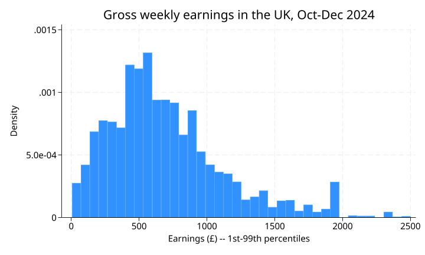
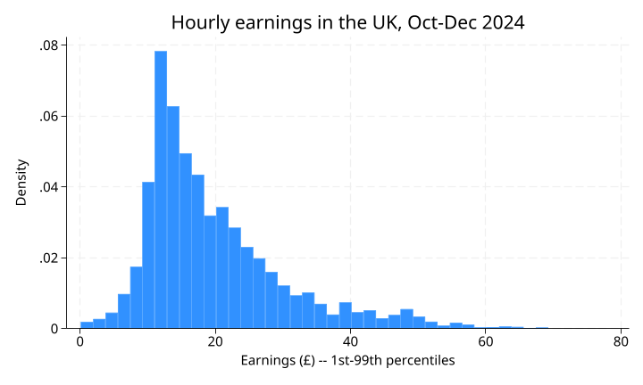

In this exercise, you will recreate a labour market analysis by the ONS, reported in the table EARN04: Gross weekly earnings of full-time employees [last accessed 21/02/2025]. Currently, this table is updated four times a year in February, May, August and November using data from the Quarterly Labour Force Survey.
Learning outcomes:
- To understand better how ONS earnings statistics are produced
- To become more familiar with key variables from the QLFS
- To learn using income weights appropriately
Data
The data used in this exercise relates to an estimate published by the ONS for October-December 2024.
To follow the exercise, you need to access the relevant dataset from the UK Data Service: Quarterly Labour Force Survey, October - December, 2024.
Get set up
We suggest that you create a folder named LFS_exercises as the working directory for this exercise – where syntax files and other materials will be stored. After downloading the data, save it in an easily accessible location within LFS_exercises, such as a subfolder named Data.
As previously, let’s just keep the variables we need for the exercise.
Examine the dataset
Let’s inspect the data and the new variables:
Contains data from Data/UKDA-9349-stata/stata/stata13/lfsp_od24_eul_pwt24.dta
Observations: 63,069
Variables: 9 19 FEB 2025 11:41
--------------------------------------------------------------------------------
Variable Storage Display Value
name type format label Variable label
--------------------------------------------------------------------------------
FTPT byte %8.0g FTPT Whether working Full or Part Time
GRSSWK int %8.0g GRSSWK Gross weekly pay in main job
(Government scheme or employee)
HOURPAY double %12.0g HOURPAY Gross hourly pay
ILODEFR byte %8.0g ILODEFR Economic activity (reported) from
MM05
INECAC05 byte %8.0g INECAC05 Basic economic activity (ILO
definition) (reported)
PERSNO byte %8.0g PERSNO Person number within household
PIWT24 long %12.0g PIWT24 Person income weight 2024
PWT24 int %8.0g PWT24 Person weight 2024
SEX byte %8.0g SEX Sex of respondent
--------------------------------------------------------------------------------
Sorted by:
Note: Dataset has changed since last saved.We can also examine descriptive statistics for weekly earnings
Gross weekly pay in main job (Government scheme or
employee)
-------------------------------------------------------------
Percentiles Smallest
1% -9 -9
5% -9 -9
10% -9 -9 Obs 63,069
25% -9 -9 Sum of wgt. 63,069
50% -9 Mean 75.80171
Largest Std. dev. 316.4214
75% -9 6731
90% 242 8077 Variance 100122.5
95% 687 15385 Skewness 12.69611
99% 1385 23076 Kurtosis 578.8119Non responses are coded using negative values, which will affect analysis results. Let’s do it again, this time with respondents who provided a valid answer only:
Gross weekly pay in main job (Government scheme or
employee)
-------------------------------------------------------------
Percentiles Smallest
1% 46 5
5% 144 5
10% 212.5 5 Obs 7,210
25% 413 12 Sum of wgt. 7,210
50% 615 Mean 732.4975
Largest Std. dev. 623.6522
75% 923 6731
90% 1346 8077 Variance 388942.1
95% 1731 15385 Skewness 10.20032
99% 2500 23076 Kurtosis 284.7453Let’s plot the distribution of weekly earnings using a histogram. Given that income data tends to be skewed to the right (a relatively small number of respondents have very large earnings), which reduces the visibility lower earnings, we will leaving out the 1% highest earners, that is respondents earning more than £2,500 per week.

Plot the distribution of hourly earnings up to the 99th percentile.
summ HOURPAY if HOURPAY>0,detail
quietly histogram HOURPAY if HOURPAY>0 & HOURPAY<=69.23, ///
xtitle("Earnings (£) -- 1st-99th percentiles") ///
title("Hourly earnings in the UK, Oct-Dec 2024")
Gross hourly pay
-------------------------------------------------------------
Percentiles Smallest
1% 4.11 .13
5% 8.47 .28
10% 10.26 .6 Obs 7,176
25% 12.49 .63 Sum of wgt. 7,176
50% 16.83 Mean 20.70628
Largest Std. dev. 15.51314
75% 24.55 212.5
90% 35.42 307.7 Variance 240.6574
95% 44.87 326.78 Skewness 7.907619
99% 69.23 461.52 Kurtosis 149.4521

Examine full-time employees
It is important to remain mindful of definitions:
Employees refers to people who whose jobs implies working under an employment contract for an employer;
Employed refers to people who are both employees and self employed ie who have a paid job.
Full-time and part-time refer to people’s self declared working-time status, irrespective of whether they are employed or self-employed
The INECAC05 variable records all nuances of economic activity (there are 35 of them!), including employment and self-employment. There is also ILODEFR which records broader economic activity status (ie Whether employed, unemployed, or on a government training scheme etc.) and group together self-employed and employees.
We will now examine these variables.
Basic economic activity (ILO |
definition) (reported) | Freq. Percent Cum.
----------------------------------------+-----------------------------------
Employee | 26,365 41.80 41.80
Self-employed | 4,387 6.96 48.76
Government employment & training progra | 47 0.07 48.83
Unpaid family worker | 100 0.16 48.99
ILO unemployed | 1,081 1.71 50.71
Inactive, seeking, unavailable, student | 76 0.12 50.83
Inactive, seeking, unavailable, looking | 36 0.06 50.88
Inactive, seeking, unavailable, tempora | 8 0.01 50.90
Inactive, seeking, unavailable, long-te | 19 0.03 50.93
Inactive, seeking, unavailable, other r | 78 0.12 51.05
Inactive, seeking, unavailable, no reas | 14 0.02 51.07
Inactive, not seeking, would like, wait | 19 0.03 51.10
Inactive, not seeking, would like, stud | 197 0.31 51.42
Inactive, not seeking, would like, look | 280 0.44 51.86
Inactive, not seeking, would like, temp | 82 0.13 51.99
Inactive, not seeking, would like, long | 575 0.91 52.90
Inactive, not seeking, would like, beli | 20 0.03 52.93
Inactive, not seeking, would like, not | 60 0.10 53.03
Inactive, not seeking, would like, does | 35 0.06 53.08
Inactive, not seeking, would like, reti | 85 0.13 53.22
Inactive, not seeking, would like, othe | 106 0.17 53.39
Inactive, not seeking, would like, no r | 1 0.00 53.39
Inactive, not seeking, not like, waitin | 10 0.02 53.40
Inactive, not seeking, not like, studen | 1,552 2.46 55.86
Inactive, not seeking, not like, lookin | 1,204 1.91 57.77
Inactive, not seeking, not like, tempor | 95 0.15 57.92
Inactive, not seeking, not like, long t | 2,041 3.24 61.16
Inactive, not seeking, not like, believ | 11 0.02 61.18
Inactive, not seeking, not like, not ye | 49 0.08 61.26
Inactive, not seeking, not like, does n | 339 0.54 61.79
Inactive, not seeking, not like, retire | 12,227 19.39 81.18
Inactive, not seeking, not like, other | 229 0.36 81.54
Inactive, not seeking, not like, no rea | 182 0.29 81.83
Under 16 | 11,459 18.17 100.00
----------------------------------------+-----------------------------------
Total | 63,069 100.00If we further want to know about about the number of employees by working-time status, we will need to explictly restrict the analysis to those:
Whether |
working Full |
or Part Time | Freq. Percent Cum.
---------------+-----------------------------------
Does not apply | 32,189 51.04 51.04
No answer | 25 0.04 51.08
Full time | 22,538 35.74 86.81
Part time | 8,314 13.18 100.00
New Deal-FT | 2 0.00 100.00
New Deal-PT | 1 0.00 100.00
---------------+-----------------------------------
Total | 63,069 100.00
Whether |
working Full |
or Part Time | Freq. Percent Cum.
---------------+-----------------------------------
No answer | 10 0.04 0.04
Full time | 19,680 74.64 74.68
Part time | 6,675 25.32 100.00
---------------+-----------------------------------
Total | 26,365 100.00There are 19,680 full-time employees in the sample.
- Provide a similar description for the summarised economic activity variable.
- How many self-employed respondents working full-time are there in the sample?
Economic |
activity |
(reported) |
from MM05 | Freq. Percent Cum.
---------------+-----------------------------------
In employment | 30,899 48.99 48.99
ILO unemployed | 1,081 1.71 50.71
Inactive | 19,630 31.12 81.83
Under 16 | 11,459 18.17 100.00
---------------+-----------------------------------
Total | 63,069 100.00
Whether |
working Full |
or Part Time | Freq. Percent Cum.
---------------+-----------------------------------
No answer | 10 0.23 0.23
Full time | 2,823 64.35 64.58
Part time | 1,553 35.40 99.98
New Deal-PT | 1 0.02 100.00
---------------+-----------------------------------
Total | 4,387 100.00There are 2,823 respondents in full-time self-employment in the sample.
ONS estimates for employees’ gross weekly earnings
The code below recreates the ONS results showing the distribution of income for full-time employees overall and by gender. We do it in two stages:
First, we create a variable to match the ONS’ definition of full-time employees
It is always a good idea to double check the ONS definition in its publication. Looking at the notes under the Table EARN04, we learn that ONS figures are only computed for respondents’ main job, and also that those earnings more than £100 per hour are excluded.
gen ftEmp=0
replace ftEmp=1 if FTPT==1 & HOURPAY<=100 & INECAC05==1
lab var ftEmp "Whether a full-time employee - ONS definition"
lab def ftEmp 0 "Anything else" 1 "Full-time employee"
lab val ftEmp ftEmp
tab ftEmp
(19,662 real changes made)
Whether a |
full-time employee |
- ONS definition | Freq. Percent Cum.
-------------------+-----------------------------------
Anything else | 43,407 68.82 68.82
Full-time employee | 19,662 31.18 100.00
-------------------+-----------------------------------
Total | 63,069 100.00- We then compute the median earnings for full-timers matching the ONS definition:
The median weekly earnings of full-time employees in the UK in October-December 2024 was £692. We need to keep in mind that by using the income weights PIWT, those with missing values on GRSSWK are automatically left out.
What are the median weekly earnings for men and women in the UK?
What are earnings at the lowest decile for males and females in the UK?
Why are we using a different weight from Exercise 1?
_pctile GRSSWK if ftEmp==1 & SEX==2 [pw=PIWT24]
return list
_pctile GRSSWK if ftEmp==1 & SEX==1 [pw=PIWT24]
return list
scalars:
r(r1) = 650
scalars:
r(r1) = 731Median weekly earnings of women and men in the UK are respectively £650 and £731
_pctile GRSSWK if ftEmp==1 & SEX==2 [pw=PIWT24],p(10)
return list
_pctile GRSSWK if ftEmp==1 & SEX==1 [pw=PIWT24],p(10)
return list
scalars:
r(r1) = 412
scalars:
r(r1) = 433The median weekly earnings for men and women in the lowest decile in the UK are respectively £412 and £434
- Because earnings are computed for a specific subpopulation: those in employment with valid earnings data.
How many people work as full-time employee?
This question relies on a slightly different definition that we have used so far since this time we won’t exclude those earning more than £100 per hour. The figures published by the ONS can be found in Table EMP01 here.
Let’s follow the same steps as before:
- Let’s flag full-time employees (no limit on hourly pay this time):
gen ftEmp2=0
replace ftEmp2=1 if FTPT==1 & INECAC05==1
lab var ftEmp2 "Whether a full-time employee - unrestricted"
lab val ftEmp ftEmp2
tab ftEmp2
(19,680 real changes made)
Whether a |
full-time |
employee - |
unrestricte |
d | Freq. Percent Cum.
------------+-----------------------------------
0 | 43,389 68.80 68.80
1 | 19,680 31.20 100.00
------------+-----------------------------------
Total | 63,069 100.00Let’s tell Stata that we are working with survey data.
Sampling weights: PIWT24
VCE: linearized
Single unit: missing
Strata 1: <one>
Sampling unit 1: <observations>
FPC 1: <zero>And finally, let’s produce our estimates:
(running total on estimation sample)
Survey: Total estimation
Number of strata = 1 Number of obs = 63,069
Number of PSUs = 63,069 Population size = 29,332,807
Subpop. no. obs = 5,134
Subpop. size = 22,442,379
Design df = 63,068
--------------------------------------------------------------
| Linearized
| Total std. err. [95% conf. interval]
-------------+------------------------------------------------
FTPT | 22442379 340442 21775113 23109645
--------------------------------------------------------------The ONS table gives the estimated number of full-time employees as 22,430,659. Above, we get 22,442,379. Why is there a difference?
What steps need to be different to get the correct estimate of the number of full-time employees?
What is the correct estimated number of:
- full-time employees;
- female and male full-time employees in the UK?
Because we have used the wrong weights ie PIWT24, the weights that can only be used for earnings estimation
We need to rerun the
svycommands using the correct weighting variable: PWT24
Sampling weights: PWT24
VCE: linearized
Single unit: missing
Strata 1: <one>
Sampling unit 1: <observations>
FPC 1: <zero>
(running total on estimation sample)
Survey: Total estimation
Number of strata = 1 Number of obs = 63,069
Number of PSUs = 63,069 Population size = 68,185,623
Subpop. no. obs = 19,674
Subpop. size = 22,430,659
Design df = 63,068
--------------------------------------------------------------
| Linearized
| Total std. err. [95% conf. interval]
-------------+------------------------------------------------
FTPT | 22430659 155125 22126613 22734705
--------------------------------------------------------------* Grouping employee flag and gender
egen ftEmpS=group(SEX ftEmp2),label
tab ftEmpS,gen(FtES)
*** Full-time employees, males
svy,subpop(FtES2):total FTPT, cformat(%9.0f)
*** Full-time employees, females
svy,subpop(FtES4):total FTPT, cformat(%9.0f)
group(SEX |
ftEmp2) | Freq. Percent Cum.
------------+-----------------------------------
Male 0 | 19,490 30.90 30.90
Male 1 | 10,903 17.29 48.19
Female 0 | 23,899 37.89 86.08
Female 1 | 8,777 13.92 100.00
------------+-----------------------------------
Total | 63,069 100.00
(running total on estimation sample)
Survey: Total estimation
Number of strata = 1 Number of obs = 63,069
Number of PSUs = 63,069 Population size = 68,185,623
Subpop. no. obs = 10,899
Subpop. size = 12,760,237
Design df = 63,068
--------------------------------------------------------------
| Linearized
| Total std. err. [95% conf. interval]
-------------+------------------------------------------------
FTPT | 12760237 126709 12511887 13008587
--------------------------------------------------------------
(running total on estimation sample)
Survey: Total estimation
Number of strata = 1 Number of obs = 63,069
Number of PSUs = 63,069 Population size = 68,185,623
Subpop. no. obs = 8,775
Subpop. size = 9,670,422
Design df = 63,068
--------------------------------------------------------------
| Linearized
| Total std. err. [95% conf. interval]
-------------+------------------------------------------------
FTPT | 9670422 109720 9455370 9885474
--------------------------------------------------------------In October - December 2024, there were respectively 9,670,422 female and 12,760,237 male full-time employees.
What next?
See if you can examine earnings for temporary workers or another group of interest. Examine the full dataset and explore as you choose.
Move to the next exercise, which uses one of the LFS longitudinal datasets.